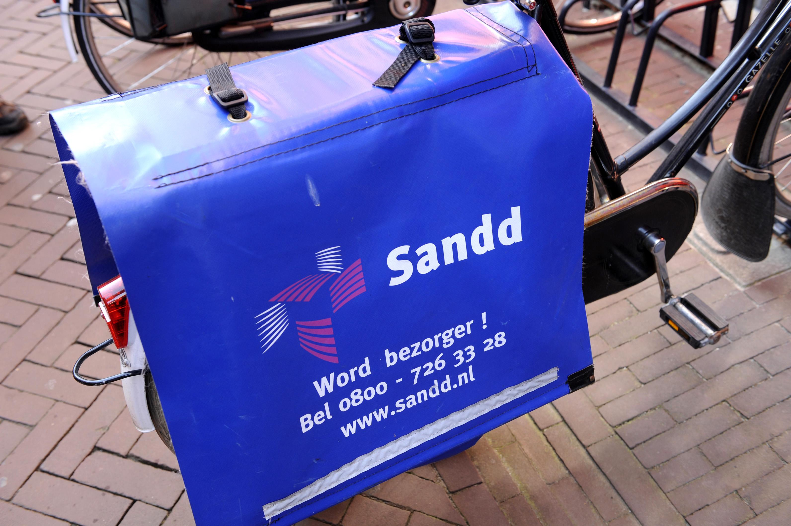

Ik heb zelf maar 2 bijbanen gehad, en ik deed daarbij gewoon hetzelfde ding: postbezorgen. Toen ik eerst werd geweigerd voor mijn opleiding besloot ik te proberen online naar wat lessen te zoeken, en ik dacht dat ik daarmee wel genoeg tijd overhad om een klein bijbaantje bij te hebben, zo ik werd postbezorger.
Ik werkte op het eerst bij Sandd. HIk vond het wel fijn om buiten te kunnen werken (tenzij het regende). Ik had daarbij de post gewoon moeten ordenen en bezorgen. Het ordenen zou me wel kunnen helpen met de opleiding. Als ik heel goed kan gaan ordenen, dan kan ik het wat makkelijker voor mezelf maken om oude bestanden terug te vinden. Voor de rest heb ik hierbij niks geleerd dat me zou kunnen helpen met deze opleiding.
Sandd werd later samengevoegd met Postnl, waar ik toen begon te werken. Ik had hierbij alleen de post moeten bezorgen, want anderen ordende de post, wat me liet zien dat het belangrijk is om alles goed te kunnen ordenen, want degenen die daar de post ordenen hadden heel wat fouten gemaakt waardoor ik er langer over deed om klaar te zijn. Dat helpt me eraan te denken om al mijn bestanden beter te ordenen. Terwijl postbezorgen en programeren niet hetzelfde zijn, heb ik wel van mijn oude bijbaan geleerd dat het altijd wel handig is om alles te ordenen.
Het enige wat ik van dit had geleerd wat me zou kunnen helpen met mijn opleiding is het ordenen van alles. Voor de rest niks.
Startpagina | Mijn vooropleidingen | Mijn bijbanen | Ontwikkelpunten |